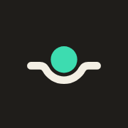

ShiftFlow на iPhone
Через Safari
- Открой эту страницу в Safari (в других браузерах пункта может не быть).
- Нажми «Поделиться» — квадрат со стрелкой внизу экрана.
- Выбери «На экран „Домой“» и нажми «Добавить».
Значок ShiftFlow появится рядом с другими приложениями. Открывается во весь экран и работает без интернета.
Профиль ShiftFlow
- Нажми кнопку ниже в Safari и разреши загрузку профиля.
- Открой «Настройки» — сверху появится «Профиль загружен».
- Нажми «Установить» и подтверди код-паролем.
Профиль только добавляет значок со ссылкой на это приложение: он не ставит сертификаты, не управляет телефоном и не видит ваши данные. Надпись «Не проверен» означает лишь, что файл не подписан сертификатом компании. Удалить: «Настройки → Основные → VPN и управление устройством → ShiftFlow».
Перенос смен
Смены хранятся только на устройстве. Чтобы перенести их с Android или из браузера: там — «Настройки → Импорт и экспорт → Резервная копия», здесь — «Импортировать файл».
Install on iPhone
Safari: open this page in Safari → Share → Add to Home Screen → Add.
Profile: tap “Скачать профиль ShiftFlow” above, allow the download, then Settings → Profile Downloaded → Install. The profile only adds the ShiftFlow icon; remove it in Settings → General → VPN & Device Management.